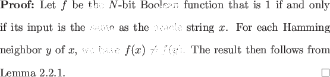
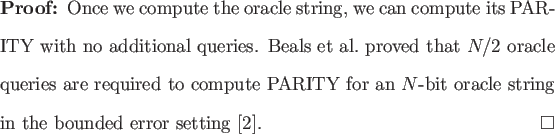

Consider the problem of determining the oracle string. We prove two
lower bounds for this problem, one through Lemma
![[*]](crossref.png) , and
another by using a known lower bound for PARITY.
, and
another by using a known lower bound for PARITY.

In the classical case N oracle queries are required to determine the
oracle string. If the lower bound of
 (
( ) oracle
queries were asymptotically tight, then there would be quadratic
improvement over the classical case for this problem. This seems
plausible in light of Grover's algorithm. However,
) oracle
queries were asymptotically tight, then there would be quadratic
improvement over the classical case for this problem. This seems
plausible in light of Grover's algorithm. However,  (N) lower
bounds are known for Boolean functions in the quantum oracle model, we
can thus infer that Theorem 2.3.1 is not asymptotically
tight.
(N) lower
bounds are known for Boolean functions in the quantum oracle model, we
can thus infer that Theorem 2.3.1 is not asymptotically
tight.

We now see an apparent limitation of Ambainis' Theorem; the result attained was quadratically worse than the asymptotically tight lower bound. We will show in the next section that the weak lower bound in Theorem 2.3.1 is indeed the best that can be attained through application of Ambainis' Theorem.